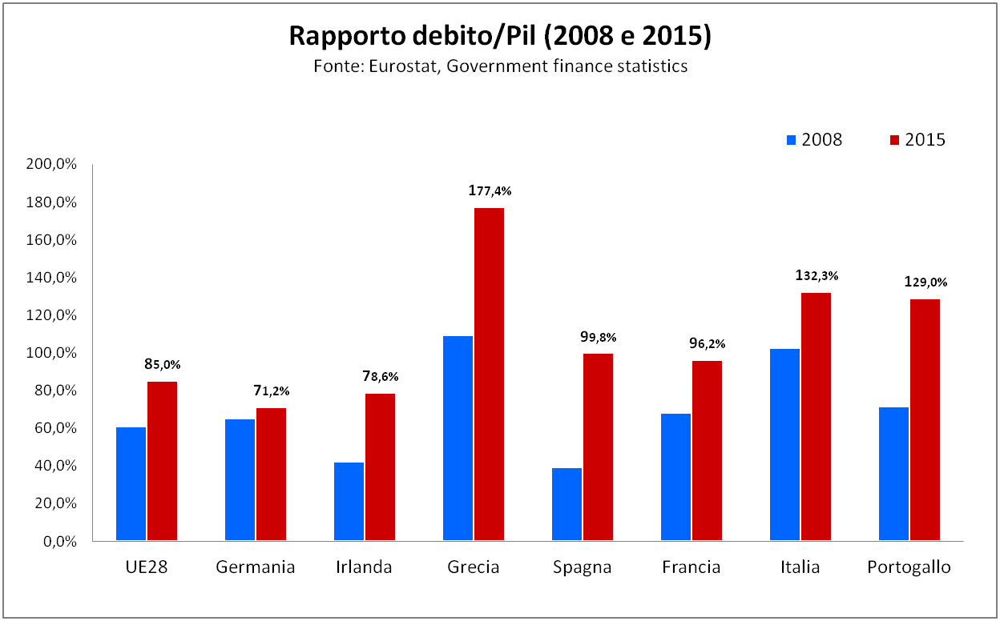
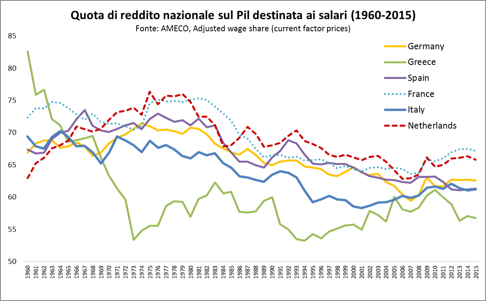
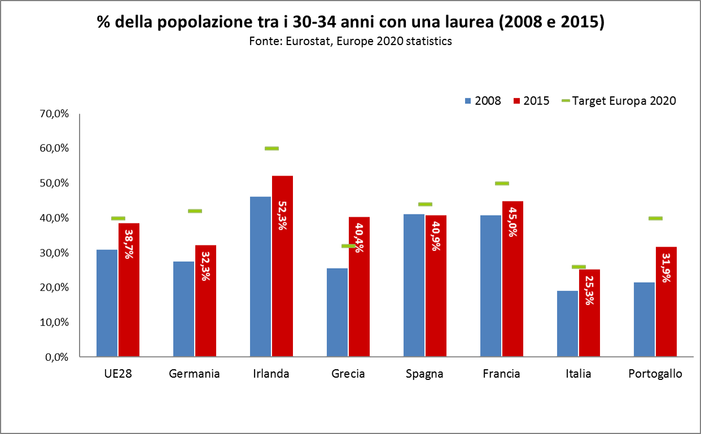
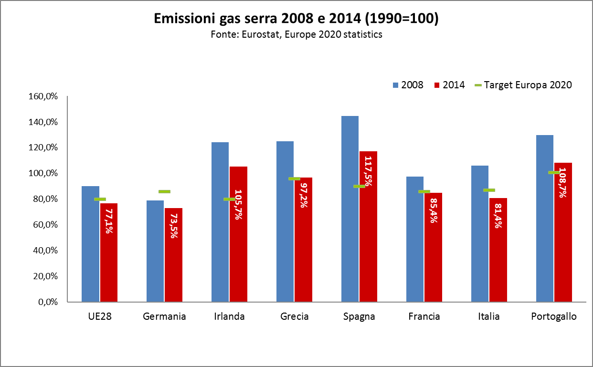
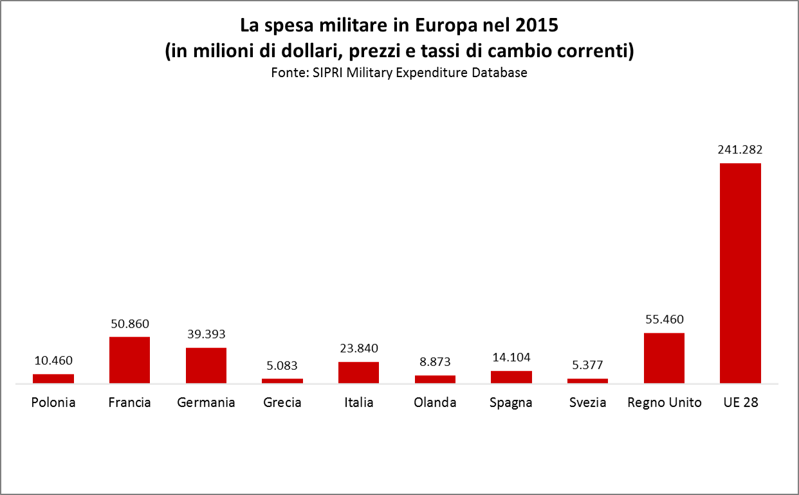

I nostri numeri sull'Europa
Un’Europa divisa in due , che vede allargarsi la forbice delle diseguaglianze economiche, sociali e di qualità della vita tra i Paesi più ricchi e quelli più poveri. È questo, in sintesi, il quadro allarmante che emerge dai dati che qui di seguito illustriamo. Con “I nostri numeri sull’Europa” vogliamo infatti gettare uno sguardo d’insieme su alcuni tra i processi e le dinamiche che caratterizzano la condizione dell’Unione Europea e che più ci stanno a cuore.
È uno spazio pensato per presentare grafici e commenti di rapida e semplice comprensione – ma non per questo di minore impatto o rilevanza – sull’Europa e sul suo stato di salute. Ove possibile, all’interno dei grafici sono riportati i target della strategia “Europa 2020”. Come si vedrà, in troppi casi si tratta di target impossibili da raggiungere nel corso dei prossimi tre anni – e questa è soltanto una delle troppe promesse disattese dall’Unione Europea e dei suoi Stati membri.
Del resto, la nostra chiave di lettura dei fenomeni messi sotto la lente d’ingrandimento è chiara ed esplicita: l’Europa che il 25 marzo 2017 festeggia il 60° anniversario dei Trattati di Roma non è la nostra Europa . Ha sottomesso i diritti delle persone agli interessi del mercato e dei grandi capitali. E con il Fiscal Compact e i programmi di “austerità espansiva” ha reso più forti gli Stati più ricchi, ha indebolito la finanza pubblica di quelli più poveri e ha terribilmente complicato – se non compromesso – l’uscita dalla crisi economico-finanziaria iniziata nel 2008 e provocata dalle speculazioni finanziarie private.
Ma il futuro dell’Europa deve essere tutto diverso, deve essere quello della giustizia economica e sociale e della sostenibilità ambientale : per salvarla da se stessa e dall’avanzata dei nazionalismi populisti e xenofobi, non esistono alternative o vie di mezzo possibili.
La spada di Damocle del debito pubblico
Dalla crisi del 2008 a oggi i dati sul debito pubblico in Europa, insieme a quelli sul deficit (si veda il grafico seguente), sono al centro di continue preoccupazioni, polemiche e contestazioni dettate della difficoltà dei Paesi della periferia di rientrare nei paramenti previsti dal Trattato di Maastricht: un rapporto debito/Pil non superiore al 60% e un rapporto deficit/Pil non superiore al 3%. Confrontando i dati del 2008 e del 2015, si nota immediatamente un aumento del rapporto debito/Pil in tutti gli Stati presi in esame, a partire dalla Grecia e dagli altri Stati della periferia. L’aumento è occorso nonostante che, da quasi dieci anni, siano state imposte rigide misure di austerità fiscale il cui obiettivo primario avrebbe dovuto essere proprio la riduzione del debito. Il dato, oltre a confermare l’inefficacia delle politiche di “austerità espansiva” della Commissione Europa, sottolineano l’insostenibile asimmetria tra Paesi centrali (capeggiati dalla Germania) e Paesi periferici dell’Unione Europea, evidenziando al contempo la necessità e l’urgenza di appianare questi squilibri macroeconomici.
Il deficit strutturale dell’Unione

Il contenimento e la riduzione del rapporto deficit/Pil (ovvero la differenza tra entrate e spesa pubblica come percentuale del Prodotto Interno Lordo di un Paese) era e rimane uno dei principali obiettivi delle politiche di austerità imposte ai Paesi membri per risolvere la crisi dell’Eurozona. Come si nota dal grafico, anche se vi è stata una riduzione di tale rapporto in Italia, Grecia e Irlanda, negli altri Stati qui presi in esame si riscontra un aumento del disavanzo pubblico come percentuale del Pil: tutto ciò anche nella “rigorosa” Germania. Appare evidente, dunque, la necessità di ripensare radicalmente l’impianto delle politiche fiscali in Europa, ad oggi focalizzate più sulla svalorizzazione (o addirittura la demonizzazione) della spesa pubblica e del welfare state che sugli assi prioritari dell’integrazione e di una crescita equa, inclusiva e sostenibile.
Ventuno milioni di persone in cerca di lavoro

Sul fronte della disoccupazione nell’Unione Europea, la buona notizia è che nel 2016 prosegue il calo iniziato nel 2014. Quella cattiva, invece, è che il calo non è abbastanza sostenuto da ritornare ai livelli che hanno preceduto la crisi economica del 2008. Tra il 2008 e il 2013, infatti, l’inarrestabile aumento del tasso di disoccupazione ha portato l’Unione su livelli a due cifre. Il picco risale proprio al 2013, anno in cui le persone in cerca di occupazione rappresentavano quasi l’11% della forza lavoro continentale. Nel 2016 la disoccupazione si attesta all’8,5%: questo significa che in Europa ci sono quasi 21 milioni di disoccupati, e che restano da recuperare ancora 1,5 punti percentuali per tornare ai valori del 2008. Insomma, c’è ancora molta strada da fare, ma senza una vera politica di stimolo e sostegno alla domanda aggregata, questo pur minimo obiettivo appare destinato a rimanere incompiuto.
Un continente spaccato in due

Nel 2016 la geografia della disoccupazione nell’Unione Europea è molto variabile, e conferma quella forte spaccatura fra Paesi ricchi del Nord e Paesi poveri del Sud che le politiche di austerity in salsa continentale non hanno certo aiutato a ricomporre. In effetti, rispetto al 2008 si registra nel complesso un aumento del tasso di disoccupazione, che passa dal 7% all’8,5%. Scendendo nel dettaglio, la Germania segna una diminuzione rispetto al 2008 di ben 3,3 punti percentuali. Per tutti gli altri Paesi la situazione negli anni della crisi è nettamente peggiorata, anche se con livelli di intensità differenti: sono particolarmente allarmanti i riscontri che vengono da Grecia (24,9%, i dati si riferiscono però al 2015) e Spagna (19,6%). L’Italia, con un tasso dell’11,9% si conferma fra gli Stati che, con oltre 5 punti di differenza rispetto ai livelli pre-crisi, sta facendo più fatica a recuperare il gap con il dato del 2008.
Un’Europa incapace di creare lavoro

È sufficiente uno sguardo ai tassi di occupazione in Europa per capire che viviamo in un continente in cui il mercato del lavoro è ormai da tempo bloccato e in cui mancano politiche economiche capaci di far fronte alla crisi e alla competizione globale creando lavoro stabile e di qualità e mettendo un freno al dilagare del precariato e dei gap di genere e generazionali nelle retribuzioni e nell’accesso all’impiego. Il confronto tra i Paesi dell’Unione è poi impietoso, a riprova dell’immagine di un’Europa divisa e polarizzata. Si tratta tra l’altro di un’immagine che riceve ulteriore conferma se questo confronto avviene sulla base dei target di Europa 2020. Innanzitutto, nel 2015 l’Unione Europea nel suo complesso si attesta ben 5 punti al di sotto dell’obiettivo prestabilito (70,1 contro 75%), mentre solo la Germania, tra i Paesi qui considerati, riesce a eguagliare e addirittura a superare il proprio obiettivo. In tutti gli altri Stati, il raggiungimento dei rispettivi target non soltanto rimane un miraggio, ma i tassi di occupazione sono addirittura ovunque in discesa rispetto a quelli del 2008.
C’era una volta la lotta di classe
Il grafico mostra l’andamento dagli anni ‘60 a oggi della quota di reddito nazionale allocata al lavoro, ovvero la parte di reddito destinata alla retribuzione del lavoro rispetto alla cosiddetta “capital share”, che riflette invece la parte di reddito che va al capitale. La divisione del reddito nazionale tra lavoro e capitale si chiama distribuzione funzionale del reddito. L’andamento decrescente della quota salari può esprimere una crescita della produttività del lavoro più rapida rispetto alla retribuzione media del lavoro, e un aumento dei rendimenti del capitale rispetto al lavoro stesso. Come si può vedere, la contrazione della quota salari e l’aumento della disuguaglianza nella distribuzione funzionale del reddito hanno riguardato in maniera notevole i Paesi della periferia europea quali Spagna e Italia, che hanno risentito in modo massiccio dell’espulsione di forza lavoro dal mercato del lavoro formale.
Continuano a crescere le disuguaglianze di reddito

Se qualcuno avesse ancora dubbi sul fatto che in Europa la crisi economica stia arricchendo chi ha già di più e impoverendo tutti gli altri, basta osservare i dati sulla differenza di reddito tra il 20% più ricco e il 20% più povero della popolazione. Dal grafico si evince che a livello aggregato si passa nell’Unione Europea da un punteggio pari a 5 nel 2008 a uno pari a 5,2 nel 2015: i più ricchi guadagnano quindi oltre 5 volte di più rispetto ai meno abbienti. Guardando ai singoli Paesi, soltanto in Germania (4,8 sia nel 2008 sia nel 2015), Francia (4,4 nel 2008 e 4,3 nel 2015) e Portogallo (6,1 nel 2008 e 6,0 nel 2015) le disuguaglianze di reddito sono rimaste invariate o sono lievemente diminuite. Al contrario, in Grecia (5,9 del 2008 contro 6,5 del 2015), Spagna (5,6 contro 6,9) e Italia (5,2 contro 5,8) la crisi ha provocato un forte aumento del divario. Più in generale, l’aumento della disuguaglianza si osserva nella gran parte degli Stati membri, ma è più pronunciato nei Paesi del Mediterraneo, nei Paesi baltici e in Romania e Bulgaria: tutti Paesi che già registravano livelli più alti di disuguaglianza, accrescendo ulteriormente la frattura tra il “centro” e la “periferia” d’Europa. Per chiudere con una metafora, piove sul bagnato.
Con la crisi aumentano povertà ed esclusione sociale

Quello relativo alla percentuale della popolazione a rischio povertà ed esclusione sociale è uno degli indicatori sociali di riferimento delle politiche sociali comunitarie: esso misura la somma di quanti si trovano in condizione di povertà relativa, soffrono di grave deprivazione materiale oppure vivono in famiglie dove si lavora meno del 20% del tempo di lavoro disponibile (la cosiddetta “bassa intensità lavorativa”). Rispetto agli indici di povertà questo indicatore guarda a un gruppo sociale a rischio di esclusione molto ampio, tanto da rappresentare quasi un quarto della popolazione. Negli anni della crisi l’indicatore ha visto un peggioramento e solo nel 2015 è tornato ai livelli pre-crisi per l’intera Unione. Lo stesso non può dirsi per i Paesi della periferia più colpiti dall’austerità europea, in primo luogo la Grecia che ha registrato un aumento di ben 8 punti percentuali. Ma anche Italia, Spagna e Portogallo si trovano oggi a livelli ben superiori rispetto a prima dell’insorgere della crisi. Tra gli Stati non rappresentati in questo grafico, il rischio di povertà ed esclusione è invece molto diminuito in Romania, Bulgaria e Lettonia, Paesi dove però si partiva da tassi altissimi (quasi il 50% nel caso della Bulgaria). In questi casi l’effetto dell’adesione all’Unione ha mostrato i suoi effetti positivi.
Una drastica riduzione della produzione industriale

Un altro segnale non certo incoraggiante sullo stato di salute in cui versa l’Unione Europea viene dal dato sulla produzione industriale. Il grafico mostra infatti l’andamento su base mensile dell’indice della produzione (IPI - Industrial Production Index) in termini di valore aggiunto, e quindi di output dell’industria, corretto per l’inflazione nel periodo 2008-2016. Dal grafico emergono con chiarezza – ancora una volta – le divergenze a livello europeo fra la Germania e le economie cosiddette periferiche. E si nota immediatamente la forte contrazione in termini di capacità produttiva dei Paesi mediterranei rispetto alla media dell’area euro. Dopo il crollo della produzione industriale che ha colpito tutte le economie europee a partire dal 2008, una ripresa della produzione in Germania, e in misura minore in Francia, si può osservare da aprile 2009. Al contrario, la tendenza al ribasso è continuata in Italia, Spagna e Grecia, con una contrazione persistente della produzione industriale per tutto il periodo considerato. L’unica, parziale, eccezione è rappresentata dalla Spagna, che fa riscontrare deboli segnali di risveglio a partire dal 2015. Gli ultimi dati disponibili mostrano quindi che la Germania è l’unico Paese della zona euro ad aver recuperato i livelli pre-crisi di produzione industriale.
Gli investimenti si contraggono e l’economia non decolla

Al forte calo della produzione industriale che ha caratterizzato la grande maggioranza dei Paesi europei e in particolare, come si è appena visto, quelli della periferia, inevitabilmente fa riscontro una drastica e generalizzata caduta degli investimenti. Il grafico evidenzia le variazioni medie annuali negli investimenti totali, sia pubblici sia privati, per i tre sotto-periodi 2008-2010, 2010-2012 e 2012-2015, a prezzi costanti (anno base 2010). Nel 2008-2010, triennio corrispondente alla prima fase della crisi economica, si riscontra ovunque in Europa un calo estremamente consistente degli investimenti – pari a ben sei punti percentuali a livello aggregato. Nel triennio successivo la situazione appare in lieve miglioramento, con una netta ripresa della Germania. Ulteriori segnali di ripresa, che tuttavia appaiono ancora troppo timidi e inconsistenti rispetto all’andamento negativo degli anni passati, arrivano nell’ultimo periodo 2012-2015. In questo quadro, l’Italia fa storia a parte: una contrazione significativa degli investimenti aggregati ha infatti caratterizzato il nostro Paese in ciascuno dei periodi analizzati. Da questo punto di vista, l’economia italiana si differenzia piuttosto nettamente non solo da quella tedesca, ma anche da quella della zona euro e dell’Unione Europea.
Largamente insufficiente la spesa per la ricerca

L’investimento in conoscenza è già da diversi anni al centro dell’agenda europea. In tal senso, gli Stati membri dell’Unione hanno individuato target ben precisi da raggiungere in termini di spesa in attività di Ricerca e Sviluppo (R&S) in rapporto al Pil, sia per la ricerca pubblica sia per quella privata. Tuttavia, al di là del valore target fissato (variabile da Paese a Paese e rimodulato nel corso del tempo in base alle singole situazioni di partenza) nel 2015 solo la Germania è prossima al raggiungimento dell’obiettivo, con una spesa in R&S pari al 2,9% del suo Pil. Ancora distanti dai propri target di riferimento appaiono invece tutti gli altri Paesi qui esaminati, a partire da Portogallo e Spagna – in cui addirittura il valore dell’indicatore diminuisce rispetto al 2008 – e da Grecia e Italia, due casi per cui occorre sottolineare che i rispettivi obiettivi sono nettamente inferiori rispetto a quello stabilito a livello continentale. Nel complesso, c’è molta strada da fare perché quella europea diventi la più grande economia mondiale basata sulla conoscenza: il traguardo della strategia Europa 2020 appare insomma molto lontano.
Passi in avanti sul fronte dell’istruzione secondaria

Quello di migliorare il livello di istruzione dei cittadini europei, facendo in modo che non più del 10% della popolazione tra i 18 e i 24 anni abbia al massimo un titolo di licenza media inferiore, è un obiettivo fondamentale che l’Unione Europea si è posta con la strategia Europa 2020. Anche se il target continentale – pari al 10% – non è stato ancora conseguito, i segnali di miglioramento sono senz’altro diffusi e incoraggianti: dal 2008 al 2015 la percentuale di giovani con bassa istruzione è scesa infatti di quasi quattro punti, dal 14,7 all’11. Guardando ai singoli Paesi, colpiscono in positivo i risultati del Portogallo e della Spagna che, seppur ancora lontani dal raggiungimento dei propri obiettivi (rispettivamente il 15% e il 10%), nei sette anni qui considerati vedono diminuire in modo notevolissimo le proprie percentuali: di quasi 20 punti il Portogallo e di oltre 10 punti la Spagna. Tra gli Stati che meglio si sono comportati su questo fronte c’è da segnalare anche la Grecia, che riesce a dimezzare i propri numeri nel settennio 2008-2015, arrivando agevolmente a conseguire il proprio target di Europa 2020.
Migliorano i dati sui giovani laureati
Per uscire dalla crisi con un nuovo modello di sviluppo, l’investimento sull’istruzione è di fondamentale importanza: soprattutto per le nuove generazioni. Così, complementare rispetto all’obiettivo descritto nel grafico precedente di diminuire il numero dei giovani in Europa con un basso livello di istruzione, vi è l’obiettivo di aumentare il numero dei laureati. Anche in questo caso si segnalano passi in avanti per l’Unione Europea. Nel 2008 in Europa il 31,1% della popolazione tra i 30 e i 34 anni aveva conseguito un titolo di laurea: sette anni dopo, nel 2015, la percentuale sale di più 7 punti arrivando a toccare quota 38,7, con punte per l’Irlanda e la Francia rispettivamente del 52,3% e del 45,0% (comunque ancora al di sotto dei target di Europa 2020, pari al 60% e al 50%). Tra i Paesi che più sono migliorati si trova di nuovo la Grecia, che passa dal 25,7% di persone di 30-34 anni in possesso di laurea nel 2008 al 40,4% nel 2015. L’Italia si attesta invece nel 2015 ancora al di sotto del target di Europa 2020 (25,3% contro 26%), nonostante un aumento dei propri laureati di quasi sei punti percentuali in sette anni.
Traguardo raggiunto: ridotte le emissioni di gas serra
Il fronte ambientale è senza dubbio quello sul quale l’Europa ha dato e sta dando i risultati migliori. Ciò è legato senz’altro alla soglia degli standard imposti e agli incentivi in materia di efficienza energetica e di utilizzo delle rinnovabili, ma non bisogna trascurare il fatto che il raggiungimento di questo traguardo derivi in buona parte dall’intrecciarsi di due fattori: la riduzione dell’attività economica e industriale a seguito della recente crisi del 2008 e l’aver fissato come base di riferimento il 1990, anno precedente alla grande deindustrializzazione dei paesi dell’ex Patto di Varsavia. L’Unione nel suo complesso ha così raggiunto l’obiettivo di riduzione delle emissioni di gas serra previsto da Europa 2020 con sei anni di anticipo (e tutti i singoli Paesi considerati qui nel grafico mostrano un trend positivo di calo delle emissioni): si tratta dell’unico obiettivo della strategia per ora già raggiunto.
Buone notizie sul fronte delle rinnovabili

Insieme alla riduzione delle emissioni di gas serra nell’Unione Europea, c’è da segnalare un’altra notizia incoraggiante: l’Europa sta intraprendendo, pur lentamente, un cammino virtuoso verso l’adozione di energie rinnovabili. Benché l’obiettivo del 20% di energia consumata proveniente da fonti rinnovabili fissato da qui a tre anni dalla strategia di Europa 2020 non sia ancora stato raggiunto, il miglioramento si osserva praticamente ovunque anno dopo anno. Tuttavia, occorre specificare che la situazione appare oggi estremamente diversificata tra gli Stati membri, passando dalla virtuosissima Svezia – che ha già superato la quota del 50% – a Paesi più in ritardo come il Regno Unito e quelli del Benelux (Belgio, Olanda e Lussemburgo), dove la quota è ancora molto al di sotto del 10%.
Cresce il riciclo dei rifiuti urbani

La percentuale di rifiuti urbani riciclati è in aumento in quasi tutti i paesi dell’Unione Europea, anche se la loro quantità varia considerevolmente tra i suoi Stati membri: da un lato troviamo infatti la Germania, che con il 66% mantiene alta anche la media generale (nessun altro supera infatti il 60%); dall’altro lato, tra i Paesi non rappresentati qui nel grafico, troviamo Malta, Slovacchia e Romania che non arrivano al 15%. Pertanto, nonostante il generale trend positivo, esiste ancora ampio spazio di miglioramento nella gran parte dei Paesi europei. In tal senso, l’adozione di elevati standard nella produzione degli imballaggi, la progressiva limitazione dell’uso dei termovalorizzatori e auspicabilmente l’abbandono dell’utilizzo delle discariche (obiettivo, questo sì, tecnicamente possibile da raggiungere, come ben dimostra il caso tedesco) può concretamente condurre a riciclare una quota sempre crescente dei rifiuti prodotti. Da questo punto di vista, le eventuali diseconomie di scala dei sistemi ad alto tasso di riciclaggio – e le conseguenti crescenti tariffe – potrebbero essere ben riassorbite dalla progressiva crescita del settore delle eco-industrie.
Un’insostenibile mobilità

In tema di mobilità sostenibile ben poco è stato fatto e si sta facendo a livello europeo, con una quota di passeggeri che si muovono sui treni sul totale degli spostamenti che rimane sostanzialmente stabile negli anni attorno al 7% nella media continentale. Le differenze variano molto: dal 12% dell’Austria allo 0,9% della Grecia. Lievi miglioramenti nel corso del tempo si osservano nei cinque grandi Paesi dell’Unione Europea e in maniera più spiccata nel Regno Unito, con un aumento di oltre tre punti percentuali dal 2000 a oggi. Ma in generale, occorre riconoscere che l’Europa non ha dato prova di saper trasformare il proprio sistema di trasporti in direzione di una maggiore sostenibilità ed intermodalità. Si continua insomma a puntare su un modello di mobilità centrato prevalentemente sull’utilizzo del mezzo privato: un modello energivoro, antieconomico e altamente impattante sotto il profilo dell’inquinamento.
Per le spese militari non c’è mai crisi
Soltanto nel 2015 sono stati destinati in Europa oltre 240 miliardi di dollari alle spese militari. Tra i Paesi UE il triste primato va al Regno Unito con oltre 55 miliardi di dollari, seguito rispettivamente da Francia (oltre 50 miliardi), Germania (quasi 40) e Italia (quasi 24). Oltre a rimarcare il fatto che l’Unione Europea non si è mai dotata né di una politica né di un modello di difesa comuni, occorre sottolineare che nel nostro continente si spende davvero troppo in armi, truppe e armamenti: somme ingentissime di denaro pubblico che oggi, con una crisi economica che dura da quasi dieci anni e di cui non si vede la fine, dovrebbero essere rivolte a ben altri impieghi e obiettivi: anche e soprattutto al fine di sostenere quei valori di pace, solidarietà e cooperazione che, dopo il dramma e le distruzioni della Seconda Guerra Mondiale, i suoi padri fondatori avevano consapevolmente posto in cima all’idea stessa di Europa unita.